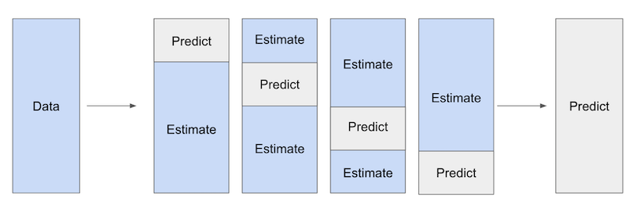
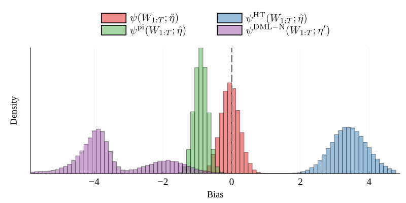
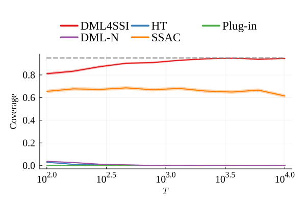
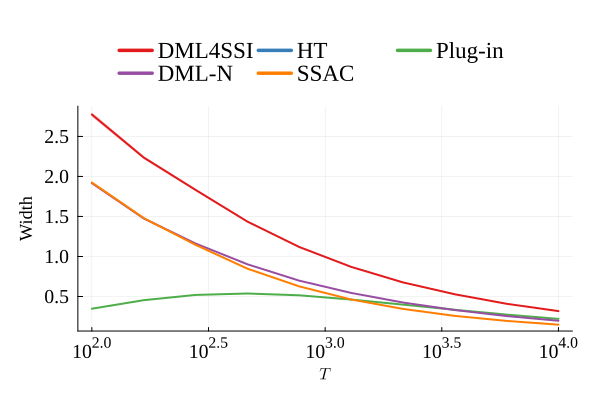
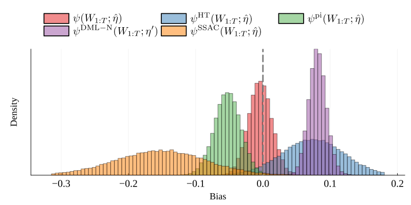
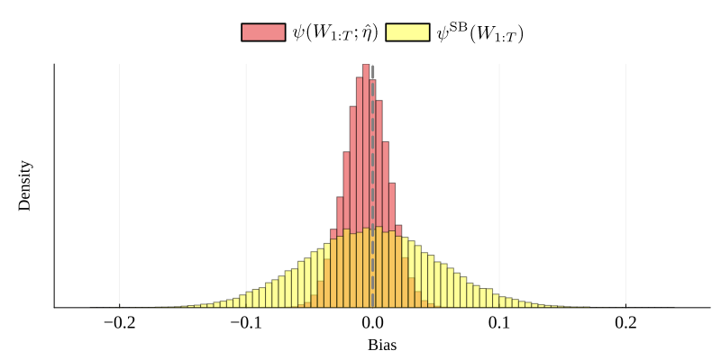

Double Machine Learning for Causal Inference under Shared-State Interference
Chris Hays & Manish Raghavan
Massachusetts Institute of Technology
Hội nghị: ICML 2025 · arXiv:2504.08836v1
Giới thiệu Nhóm
Thành viên thực hiện — Nhóm 10
Lớp: Phân tích dữ liệu thông minh
👤
Lê Duy Anh
22127012
👤
Huỳnh Cao Tuấn Kiệt
22127219
👤
Võ Thành Nghĩa
22127295
Nội dung trình bày
Mục lục
PHẦN 1 · Đặt vấn đề & Động lực
PHẦN 2 · Mô hình hóa SSI
PHẦN 3 · Lý thuyết DML cho SSI
PHẦN 4 · Ứng dụng mô hình thực tế
PHẦN 5 · Kết quả Mô phỏng Thực nghiệm
PHẦN 6 · Kết luận & Thảo luận
PHẦN 1 · Đặt vấn đề & Động lực
Hiện tượng Nhiễu loạn (Interference) & SUTVA
Suy luận nhân quả truyền thống giả định không có nhiễu loạn giữa các đơn vị (no interference / SUTVA) — giả định này sụp đổ trên nhiều nền tảng thực tế:
🎯
Hệ thống gợi ý
Tương tác của một người dùng làm thay đổi nội dung gợi ý cho những người dùng sau
Trạng thái chung: điểm phổ biến, embedding, lịch sử xem
🛒
Thị trường / Sàn TMĐT
Khuyến mãi làm thay đổi nhu cầu, giá cả, thời gian chờ và hàng tồn kho
Trạng thái chung: lượng tồn kho, giá hiện tại, tín hiệu cầu
🚗
Gọi xe công nghệ
Đối xử với một số hành khách làm thay đổi lượng tài xế trống cho những người khác
Trạng thái chung: số tài xế trống, giá linh động (surge), thời gian chờ
Ngay cả thí nghiệm ngẫu nhiên (randomized experiments) cũng có thể bị chệch khi một đơn vị được đối xử làm thay đổi điều kiện thị trường chung, ảnh hưởng đến các đơn vị sau.
Nhiễu loạn không phải tùy tiện — nó chảy qua một trạng thái chung quan sát được \(H_t\), thứ tóm gọn toàn bộ tác động lan tỏa (spillover) trong quá khứ.
Hình 1. Cấu trúc phụ thuộc: \(W_{t-1} \to H_t \to Y_t\) — quá khứ chỉ ảnh hưởng tương lai qua trạng thái chung \(H_t\).
\(H_t\) có thể là lượng hàng tồn kho, giá cả, thời gian chờ, điểm phổ biến, hay đầu ra của thuật toán gợi ý — bất kỳ cơ chế nào trung chuyển tác động lan tỏa giữa các đơn vị theo thời gian. Đơn vị vừa bị ảnh hưởng bởi trạng thái chung, vừa góp phần làm thay đổi nó.
Hạn chế của nghiên cứu trước & Đóng góp của bài báo
Nghiên cứu trước đây
Thường dựa vào mô hình parametric (tham số cố định)
Hoặc giả định đặc thù cho từng bài toán cụ thể
Dễ bị chệch khi mô hình hóa sai & khó mở rộng
Đóng góp chính
Đưa ra khung lý thuyết tổng quát (General Framework) cho SSI.
Mở rộng định lý DML cho SSI — dùng ML linh hoạt, không cần giả định parametric.
Cung cấp bộ ước lượng phương sai nhất quán (Consistent Variance Estimator) để xây khoảng tin cậy chuẩn xác.
Điểm mấu chốt: kết hợp được tính linh hoạt của Machine Learning với suy luận thống kê hợp lệ, ngay cả khi dữ liệu phụ thuộc theo chuỗi thời gian.
PHẦN 2 · Mô hình hóa SSI
Thiết lập mô hình toán học (Setting & Notation)
Dữ liệu quan sát tại mỗi bước thời gian \(t = 1, 2, \dots, T\):
\[ W_t = \{X_t,\, D_t,\, H_t,\, Y_t\} \]
\(X_t\): biến nền cảnh (covariates) độc lập đồng phân phối (i.i.d.) — ví dụ vị trí, lịch sử xem, thiết bị
\(D_t\): biến đối xử nhị phân (treatment), độc lập với dữ liệu quá khứ nhưng có thể phụ thuộc \(X_t\)
\(H_t\): trạng thái chung (shared state) quan sát được — biến quyết định của bài báo
\(Y_t(D_t, H_t)\): kết quả tiềm năng (potential outcome) phụ thuộc hai đối số: đối xử của chính đơn vị và trạng thái chung
Khác với SUTVA (kết quả chỉ phụ thuộc \(D_t\)), ở đây \(Y_t\) bị đồng quyết định bởi cả \(D_t\) lẫn trạng thái chung \(H_t\). Tồn tại vòng lặp phản hồi hai chiều: \(H_t \to Y_t\), và ngược lại \((D_t, X_t) \to H_{t+1}\).
Giả định cốt lõi — Tính chất Markov (The Markov Property)
Giả định Markov của trạng thái chung — Công thức (1)
\[ P(H_t \in A \mid W_{1:t-1}) = P(H_t \in A \mid W_{t-1}) \]
Khi đã biết quan sát ngay trước đó \(W_{t-1}\), trạng thái chung kế tiếp \(H_t\) độc lập điều kiện với toàn bộ lịch sử xa hơn — "quá khứ xa đã được gói gọn trong hiện tại".
Cấu trúc phụ thuộc (Hình 1): trong sơ đồ ở slide trước, mọi mũi tên từ quá khứ sang tương lai bắt buộc "đi xuyên qua" các nút trạng thái chung \(H_{t-1} \to H_t\). Các cá thể không có mũi tên ngang nối trực tiếp, nhưng ảnh hưởng nhau gián tiếp qua đường trạng thái chung ở tầng trên.
Hệ quả: do \(X_t\) i.i.d. và \(D_t\) không phụ thuộc quá khứ, toàn chuỗi \(\{W_t\}\) tạo thành một chuỗi Markov thuần nhất (homogeneous Markov chain) với kernel chuyển trạng thái \(K_H\) cố định — nền móng để dùng các định lý giới hạn ở phần sau.
Các điều kiện của Chuỗi Markov (Assumption 2.1)
Hệ thống SSI phải thỏa mãn một trong hai cấu trúc phụ thuộc sau:
Điều kiện (a) — Hội tụ hình học & Cân bằng chi tiết (Geometric Ergodicity & Detailed Balance)
Chuỗi Markov hội tụ về một phân phối dừng duy nhất, với tốc độ cực nhanh theo hàm mũ. Hiểu nôm na: "nhiễu phai nhạt nhanh theo hàm mũ" — tương quan giữa các quan sát cách xa nhau giảm về 0 đủ nhanh để suy luận tiệm cận có hiệu lực.
Điều kiện (b) — Phụ thuộc hữu hạn (\(m\)-Dependence)
Các quan sát cách nhau xa hơn \(m\) bước thì hoàn toàn độc lập:
\[ W_{1:t} \perp W_{t+m+1:T} \]
Hiểu nôm na: "nhiễu chỉ kéo dài tối đa \(m\) bước rồi biến mất". Tự nhiên cho các thử nghiệm Switchback.
Hai giả định này thay thế giả định i.i.d. trong DML thông thường, cho phép một định lý giới hạn trung tâm (CLT) vẫn đúng trên dữ liệu phụ thuộc.
\(\theta_0\): tác động điều trị cần ước lượng. Chỉ số \(_0\) ký hiệu giá trị thực ở tổng thể (true value) — đại lượng ta muốn khôi phục.
\(g_0(X_t)\): hàm nhiễu (nuisance function) — kỳ vọng điều kiện thực của các yếu tố gây nhiễu lên kết quả; phi tuyến, không biết trước (chỉ số \(_0\) cũng là giá trị thực).
Hồi quy \(\tilde{Y}\) theo \(\tilde{D}\):
\(\tilde{Y} = \theta_0\, \tilde{D} + u\)
\(\Rightarrow\; \theta_0\) chính là hệ số của hàm ban đầu.
Định lý FWL cho phép cô lập tác động của \(D\) bằng cách loại bỏ ảnh hưởng của \(X\) khỏi cả \(Y\) lẫn \(D\) — đây là cốt lõi ý tưởng của DML.
Cross-fitting (chia mẫu) trong DML — và vì sao cần nó
Không được học mô hình dự đoán và tính phần dư trên cùng một dữ liệu.
Overfit \(\hat{Y}\) (outcome model): phần dư \(\tilde{Y}\) nhỏ giả tạo → mô hình "nuốt" mất tín hiệu nhân quả → \(\hat{\theta}\) bị chệch về 0.
Overfit \(\hat{D}\) (treatment model): phần dư \(\tilde{D}\) thiếu phương sai → thổi phồng phương sai của \(\hat{\theta}\), ước lượng kém ổn định.

Mỗi fold lần lượt được giữ lại để Predict; các fold còn lại dùng để Estimate (học \(\hat{l}, \hat{m}\)). → phần dư out-of-fold: tính từ mô hình chưa từng thấy quan sát đó nên không bị overfit
Vấn đề khi có trạng thái chung \(H_t\) (SSI)
Trong bài toán SSI, kết quả còn bị chi phối bởi trạng thái chung \(H_t\) — phương trình trở thành:
\(H_t\) tiến hóa theo thời gian (chuỗi Markov) → các quan sát không còn i.i.d., chúng "nói chuyện" với nhau qua dòng thời gian.
Hệ quả: K-fold cross-fitting không còn hợp lệ vì \(H_t\) tạo ra hai vấn đề — ① Data Leakage: khi chia ngẫu nhiên, quan sát test tại \(t\) vẫn nhận \(H_t\) từ các quan sát train liền trước, khiến phần dư không còn out-of-sample thật sự và \(\hat{\theta}\) bị chệch; ② Lệch phương sai: các \(\varepsilon_t\) tương quan nhau qua \(H_t\), làm công thức \(\widehat{\text{Var}}(\hat{\theta})\) chuẩn sai lệch.
① Dữ liệu Rò Rỉ (Data Leakage)
TRAIN
t=1
\(H_2\)
TRAIN
t=2
\(H_3\)⚠
TEST ✖
t=3
\(H_4\)
TRAIN
t=4
t=3 (test) nhận \(H_3\) từ t=2 (train) → mô hình đã "thấy" t=3 gián tiếp
→ phần dư không còn out-of-sample thật sự, \(\hat{\theta}\) bị chệch
② Lệch Phương Sai Ước Lượng
\(\operatorname{Cov}(\varepsilon_t, \varepsilon_s) \neq 0\) do \(H_t\) tạo tương quan chuỗi
→ \(\widehat{\operatorname{Var}}(\hat{\theta})\) chuẩn bị thổi phồng/thu hẹp sai, khoảng tin cậy không còn hiệu lực
PHẦN 3 · Tại sao Cross-Fitting thất bại
Vấn đề 1 — Data Leakage qua \(H_t\)
Fold Train — học \(\hat{l}, \hat{m}\)
Fold Test — tính phần dư
TRAIN
t=1
\(D_1,Y_1\)
\(H_2\)
TRAIN
t=2
\(D_2,Y_2\)
⚠ Rò rỉ!\(H_3\)mang thông tin train
TEST ✖
t=3
bị nhiễm!
\(H_4\)
TRAIN
t=4
\(D_4,Y_4\)
Cơ chế rò rỉ: \(H_3\) được tính từ \((D_2, Y_2, H_2)\) — toàn bộ thông tin của t=2 (train). Khi t=3 (test) sử dụng \(H_3\) để tính phần dư, mô hình \(\hat{l}, \hat{m}\) đã gián tiếp "thấy" t=3 trong quá trình train.
Hậu quả: Phần dư \(\tilde{Y}_t = Y_t - \hat{l}(X_t, H_t)\) bị thu hẹp giả tạo (overfit) → hồi quy cuối kéo \(\hat{\theta}\) về phía 0 → ước lượng bị chệch.
PHẦN 3 · Tại sao Cross-Fitting thất bại
Vấn đề 2 — Lệch Phương Sai Ước Lượng
\(H_t\) tạo tương quan chuỗi giữa các phần dư — làm sai công thức phương sai ngay cả khi không có data leakage.
Chìa khoá: vì \(\hat{l}, \hat{m}\) học từ \(W_{\text{aux}} \perp W_{1:T}\), phần dư \(\tilde{Y}, \tilde{D}\) không bị overfit → hồi quy cuối cho \(\hat{\theta}\) tiệm cận không lệch dù \(H_t\) phụ thuộc theo thời gian.
PHẦN 3 · Giải pháp thay thế Cross-Fitting
\(m\)-Dependence: Block Cross-Fitting với khoảng đệm
Nếu các quan sát cách nhau >\(m\) bước thì độc lập hoàn toàn — ta chia dữ liệu thành khối liên tục và chèn khoảng đệm \(m\) giữa train và test để chặn rò rỉ qua \(H_t\).
Tập Huấn luyện (Train)
Tập Kiểm tra (Test)
Khoảng đệm \(m\) (bỏ qua)
Khối 1
Khối 2
Khối 3
Lượt 1
Gap ở đầu K2
Test 1
m
Train
Train
Lượt 2
Gap ở cuối K1 & đầu K3
Train
Test 2
Train
Lượt 3
Gap ở cuối K2
Train
Train
Test 3
Điều kiện: cần biết \(m\) — khoảng thời gian để \(H_t\) "phai nhạt".
PHẦN 4 · Ứng dụng mô hình thực tế
Ứng dụng 1 — Tác động Trực tiếp Trung bình (ADE)
Bối cảnh: Dữ liệu quan sát (observational). Mục tiêu: Cô lập tác động khi lật đối xử của một đơn vị, tránh sai lệch do tương tác chéo (SUTVA vi phạm), trong khi giữ nguyên phân phối đối xử của các đơn vị khác.
Ý nghĩa: Đo lường sự thay đổi kết quả của đơn vị \(t\) khi nhận đối xử (1 so với 0), trong khi giữ cố định trạng thái chung \(H_t\) (đại diện cho tương tác chéo từ các cá thể khác và quá khứ) theo tiến trình tiến hóa tự nhiên của hệ thống.
PHẦN 4 · Ứng dụng mô hình thực tế
Bộ ước lượng ADE (ADE Estimator)
Cơ chế: dùng bộ ước lượng \(\hat{\psi}_{\text{ADE}} = \frac{1}{T} \sum_{t=1}^T \phi(W_t; \eta)\) với estimator AIPW (Augmented Inverse Probability Weighting) có điều chỉnh theo \(H_t\):
Plug-in: dùng ML dự đoán trực tiếp chênh lệch kết quả. Debiasing: dùng \(m(X_t)\) để đánh trọng số lại phần dư và sửa lỗi cho mô hình ML.
Giống AIPW chuẩn, nhưng mô hình kết quả \(f\) chứa \(H_t\) để kiểm soát gây nhiễu.
PHẦN 4 · Ứng dụng mô hình thực tế
Ứng dụng 2 — Thử nghiệm Switchback cho Tác động Toàn cục (GATE)
Bối cảnh: Thử nghiệm Switchback (bật/tắt theo các khối thời gian kế tiếp). Mục tiêu: so sánh khi tất cả được đối xử vs tất cả bị kiểm soát — bao gồm tác động lan tỏa.
Trạng thái chung trong Switchback: Để biểu diễn nhiễu lan tỏa kéo dài tối đa \(m\) bước, trạng thái chung \(H_t\) được định nghĩa là chuỗi hành động đối xử và covariate trong \(m\) bước trước đó:
\[ H_t = \text{vec}(D_{t-m:t-1},\, X_{t-m:t-1}) \]
PHẦN 4 · Ứng dụng mô hình thực tế
Bộ ước lượng GATE trong Switchback (GATE Estimator)
Cơ chế: dùng bộ ước lượng \(\hat{\psi}_{\text{GATE}} = \frac{1}{T} \sum_{t=1}^T \phi(W_t; \eta)\) với hàm score DML:
\[
\phi(W_t;\eta) = \underbrace{f(1,X_t,H_t(1)) - f(0,X_t,H_t(0))}_{\text{Plug-in: Hồi quy hiệu chỉnh (Regression Adjustment)}} + \underbrace{\Bigl(\tfrac{\mathbf{1}\{D_{t-m:t}=\mathbf{1}\}}{\pi^*(\cdot,1)} - \tfrac{\mathbf{1}\{D_{t-m:t}=\mathbf{0}\}}{\pi^*(\cdot,0)}\Bigr) \cdot\,(Y_t - f(D_t,X_t,H_t))}_{\text{Debiasing: Sửa sai hoạt động ở cửa sổ thuần nhất}}
\]
Plug-in (Regression Adjustment): Dùng ML dự đoán kết quả tiềm năng, hoạt động ở mọi bước thời gian để giảm đáng kể phương sai. Debiasing: Chỉ kích hoạt khi chuỗi đối xử đạt trạng thái thuần nhất trong ít nhất \(m+1\) bước liên tiếp (cùng tất cả là đối xử hoặc kiểm soát).
PHẦN 5 · Kết quả Mô phỏng Thực nghiệm
Thực nghiệm cho ADE (Hình 2 & Hình 3)
Mô tả mô phỏng: Hình 2 thể hiện độ lệch của các điểm ước lượng; Hình 3 thể hiện độ phủ (Coverage) và độ rộng (Width) của khoảng tin cậy 95% dưới các cỡ mẫu \(T\) khác nhau.
DML4SSIPlug-inHTNaive DMLSSAC
Hình 2 — Ước lượng điểm ADE (Độ lệch / Bias)

Hình 3 — Khoảng tin cậy ADE (Độ phủ & Độ rộng)
Coverage (Yêu cầu: 95%)

Width (Độ rộng KTC)

Sai lệch điểm ước lượng (Hình 2): Bỏ qua trạng thái chung \(H_t\) (Plug-in, HT, Naive DML) dẫn đến ước lượng điểm bị chệch nặng do không kiểm soát được nhiễu.
Sai lệch khoảng tin cậy (Hình 3): Bỏ qua hiệp phương sai chuỗi thời gian (SSAC) tuy ước lượng không chệch nhưng đánh giá thấp phương sai, làm KTC quá hẹp và độ phủ thực tế chỉ đạt 60–70% thay vì 95%. Chỉ DML4SSI đạt độ phủ chuẩn 95%.
Thực nghiệm cho GATE trong Switchback (Hình 4 & Hình 5)
Lưu ý: Hình 4 chỉ hiển thị 4 đường ước lượng; SSAC xuất hiện ở Hình 3 của slide trước. Hình 5 so sánh DML4SSI với SB.
Hình 4 — DML so với naive estimators

Hình 5 — DML so với Switchback HT

SB (Bojinov và cộng sự, 2022) không chệch nhưng KTC rộng gấp 3–7,5 lần. DML4SSI đạt độ chính tâm tương đương với phương sai thấp hơn rất nhiều nhờ tận dụng thông tin covariate và trạng thái chung.
PHẦN 5 · Kết quả Mô phỏng Thực nghiệm
Độ phủ & Độ rộng KTC cho GATE (Hình 6)
Hình 6 — Độ phủ và độ rộng KTC của GATE theo cỡ mẫu
Phân tích Khoảng tin cậy (KTC):
Độ phủ (Coverage):
Phương pháp đề xuất DML4SSI nhanh chóng hội tụ về mức 95% khi \(T\) tăng.
Ngược lại, phương pháp SB đạt độ phủ bảo thủ 100% do ước lượng phương sai quá lớn.
Độ rộng (Width):
KTC của SB truyền thống rộng gấp 3 đến 7.5 lần so với DML4SSI.
Ý nghĩa kinh tế: Khả năng thu hẹp khoảng tin cậy vượt trội của DML4SSI cho phép doanh nghiệp tiết kiệm cỡ mẫu hoặc thời gian chạy A/B test để đưa ra quyết định kinh doanh với cùng mức độ tin cậy.
PHẦN 6 · Kết luận & Thảo luận
Tóm tắt bài thuyết trình
Hình thức hóa nhiễu loạn trạng thái chung (SSI) — một khung cấu trúc nhiễu loạn thực tế và khả thi để tính toán.
Kết hợp thành công DML vào chuỗi dữ liệu phụ thuộc Markov (quan sát phụ thuộc sinh bởi trạng thái chung).
Cho bộ ước lượng chuẩn tắc tiệm cận + phương sai nhất quán tôn trọng phụ thuộc theo thời gian.
Hiện thực hóa cho ADE (quan sát) và GATE (switchback); mô phỏng cho thấy phương pháp ngây thơ bị chệch hoặc KTC không hợp lệ.
Thông điệp cốt lõi (Tóm tắt một câu)
Nhiễu loạn không làm cho suy luận nhân quả bất khả thi, nếu nó có cấu trúc khai thác được: khi nhiễu loạn chảy qua một trạng thái chung quan sát được, ta khôi phục được suy luận kiểu DML bằng cách mô hình hóa sự phụ thuộc và ước lượng phương sai đúng cách.
Hạn chế & Hướng phát triển tương lai
Hạn chế hiện tại
Yêu cầu trạng thái chung \(H_t\) phải quan sát được
Nhiễu loạn phải được trung chuyển hoàn toàn qua \(H_t\)
Yêu cầu cấu trúc Markov hoặc \(m\)-phụ thuộc
Định lý chính dùng dữ liệu phụ trợ để ước lượng hàm phụ
Hướng tương lai
Các đại lượng mục tiêu khác: tác động gián tiếp (Average Indirect Effect), tác động chiết khấu theo thời gian
Trường hợp trạng thái chung tác động ngược lại lên việc phân bổ đối xử
Ứng dụng vào dữ liệu thực tế của các hệ thống khuyến nghị thương mại
Kỹ thuật chia mẫu khả thi trên dữ liệu phụ thuộc
KẾT THÚC BÀI THUYẾT TRÌNH
Hỏi & Đáp (Q&A)
🙏
Xin chân thành cảm ơn!
Hỏi & Đáp (Q&A)
———
Phụ lục — Nội dung chi tiết & dự phòng
ADE — Mô hình cấu trúc · Bộ ước lượng (hàm score) · Định lý 4.3
Switchback — Mô hình & Bộ ước lượng · Định lý 5.3
Định nghĩa Estimand (ADE / GATE) dạng tab tương tác
Trông giống bộ ước lượng AIPW (Augmented Inverse Probability Weighting) chuẩn — chỉ khác ở chỗ mô hình kết quả \(f\) có chứa trạng thái chung \(H_t\) để kiểm soát gây nhiễu. Tuy nhiên suy luận không phải i.i.d. vì \(H_t\) tạo ra phụ thuộc theo chuỗi thời gian.
Phụ lục · Ứng dụng 1 (ADE)
ADE — Giả định và Kết quả (Định lý 4.3)
Các yêu cầu chính:
Xác suất đối xử bị chặn cách xa 0 và 1 (overlap / positivity)
Áp dụng điều kiện "tốc độ tích" (product-rate) quen thuộc của DML: nếu cả hai hàm phụ hội tụ ở tốc độ \(T^{-1/4}\) thì tích của chúng đủ nhanh. Nếu propensity score đã biết, mô hình kết quả được phép hội tụ chậm hơn.
Phụ lục · Ứng dụng 2 (Switchback / GATE)
Switchback — Mô hình và Bộ ước lượng
Trạng thái chung = \(m\) đối xử & covariate ngay trước đó:
Chứng minh mở rộng lý thuyết DML chuẩn sang dữ liệu phụ thuộc theo bốn bước:
1
Phân rã sai số bộ ước lượng
Tách \(\hat{\psi} - \psi^*\) thành: quá trình thực nghiệm oracle + độ lệch hàm phụ + phần dư bậc hai
↓
2
Áp dụng trực giao Neyman
Sai số hàm phụ bậc nhất triệt tiêu về 0 → chỉ còn số hạng oracle + phần dư \(o_p(T^{-1/2})\)
↓
3
Áp dụng CLT cho dữ liệu phụ thuộc
Thay CLT i.i.d. bằng CLT chuỗi Markov (geometric ergodicity) hoặc CLT \(m\)-phụ thuộc để xử lý hiệp phương sai theo thời gian của \(\phi(W_t)\)
↓
4
Chứng minh tính nhất quán của phương sai
Chứng minh bộ ước lượng batch-means (trường hợp Markov) hoặc plug-in với hiệp phương sai độ trễ \(m\) (trường hợp \(m\)-dep) hội tụ về phương sai dài hạn thực \(\sigma^2\)
Phụ lục · Ký hiệu
Bảng ký hiệu chính
\(W_t = \{X_t, D_t, H_t, Y_t\}\): dữ liệu quan sát tại bước \(t\)
\(X_t\): biến nền cảnh (covariates)
\(D_t\): biến đối xử (treatment)
\(H_t\): trạng thái chung (shared state)
\(Y_t\): kết quả (outcome)
\(\eta\): các hàm phụ (nuisance functions)
\(f\): hồi quy kết quả (outcome regression)
\(m\): điểm xu hướng (propensity score)
\(\phi\): hàm score / moment
\(\psi^*\): đại lượng mục tiêu
\(\hat{\psi}\): bộ ước lượng
Phụ lục · Nghiên cứu liên quan
Định vị trong các nghiên cứu liên quan
Bài báo kết nối bốn dòng nghiên cứu:
Nhiễu loạn trong thị trường và hệ thống gợi ý
Nhiễu loạn kiểu Markov và thử nghiệm switchback
Suy luận bán tham số (semiparametric) và double machine learning
Định lý giới hạn trung tâm cho dữ liệu phụ thuộc
So với nghiên cứu nhiễu loạn mạng lưới (network interference): khung này cho phép mỗi đơn vị phụ thuộc vào nhiều đơn vị trước thông qua một trạng thái chung.
So với mô hình thị trường đặc thù theo lĩnh vực: ít tham số hơn nhưng vẫn cần một quá trình trạng thái có cấu trúc.
Phụ lục · Thiết lập mô phỏng
Thiết lập mô phỏng cho ADE (Section 4)
Thông số mẫu: Cỡ mẫu mỗi lần chạy \(T = 1,000\), số lượng hiệp biến (covariates) \(d_X = 10\).
Các hiệp biến: \(X_{t,i} \sim \mathcal{N}(1, 1)\) i.i.d. cho mỗi thành phần \(i = 1, \dots, d_X\).
Chính sách đối xử (Propensity Score): \(D_t \sim \text{Ber}(m^*(X_t))\) với \(m^*(X_t) = \min\{\max\{0.1, X_{t,1}\}, 0.9\}\) (sử dụng cắt tỉa propensity score với \(\zeta = 0.1\)).
trong đó nhiễu kết quả \(\tilde{Y}_t \sim \mathcal{N}(0, 0.1)\) i.i.d.
Chính sách phân bổ đối xử: Propensity score thực tế được gán tương tự mô phỏng ADE với xác suất cắt tỉa \(\zeta = 0.1\).
Mô hình học máy phụ trợ: Ước lượng hàm phụ \(\hat{f}\) bằng Random Forest (mô hình mặc định), huấn luyện trên tập dữ liệu phụ trợ độc lập có kích thước \(T\).